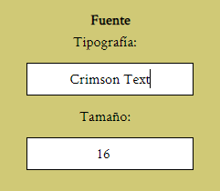
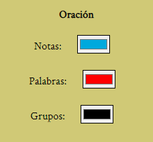
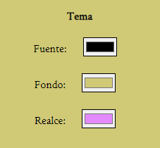
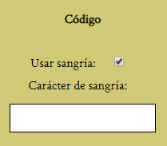
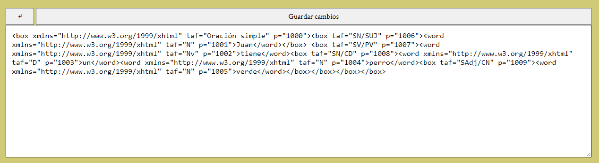
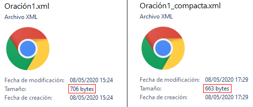
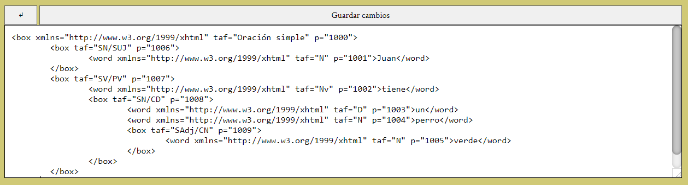
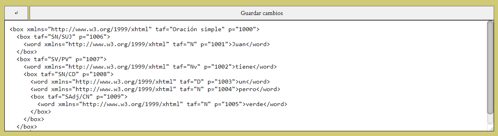

Personalizar
Puedes personalizar Lemon Ink para cambiar los colores, la fuente, etc. Para comenzar ve a la pestaña "Personalizar" y comienza a cambiar cosas.
Recuerda pulsar en "Guardar cambios" al terminar.
Fuente
En este apartado puedes cambiar la tipografía y el tamaño de la fuente.

Además de las fuentes que tengas instaladas en tu ordenador, Lemon Ink incluye cuatro fuentes más:
- Crimson Text
- Lato
- Lemon
- Major Mono Display
Si la tipografía es errónea o no existe, por defecto funcionará Times New Roman.
Oración
En este apartado puedes cambiar los colores por defecto de los elementos en la oración. En la pestaña editar puedes cambiar el color de los elementos individualmente.

Tema
En este apartado puedes cambiar los colores del tema de Lemon Ink

Código
En este apartado puedes personalizar la vista del código de la oración (ver Código). Esto tiene repercusiones al guardar en XML, si no entiendes del código es mejor que no toques nada.

Si no usas la sangría el código se compactará todo en una línea.

Esto hará que al guardar la oración ocupe un poco menos de espacio pero será menos legible para la mente humana.
Aquí podemos vemos una comparación de tamaño.

El carácter de sangría es el carácter que se colocará repetidas veces antes de cada línea para indicar su nivel.
Los programadores suelen utilizar -Un tabulador- o -Dos espacios-
Aquí vemos un ejemplo con tabulador y otro con doble espacio:

